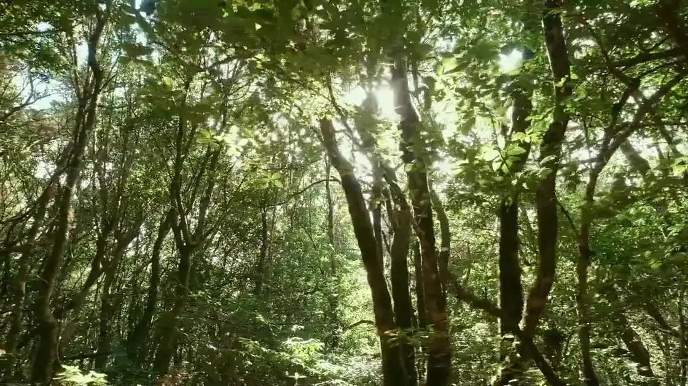
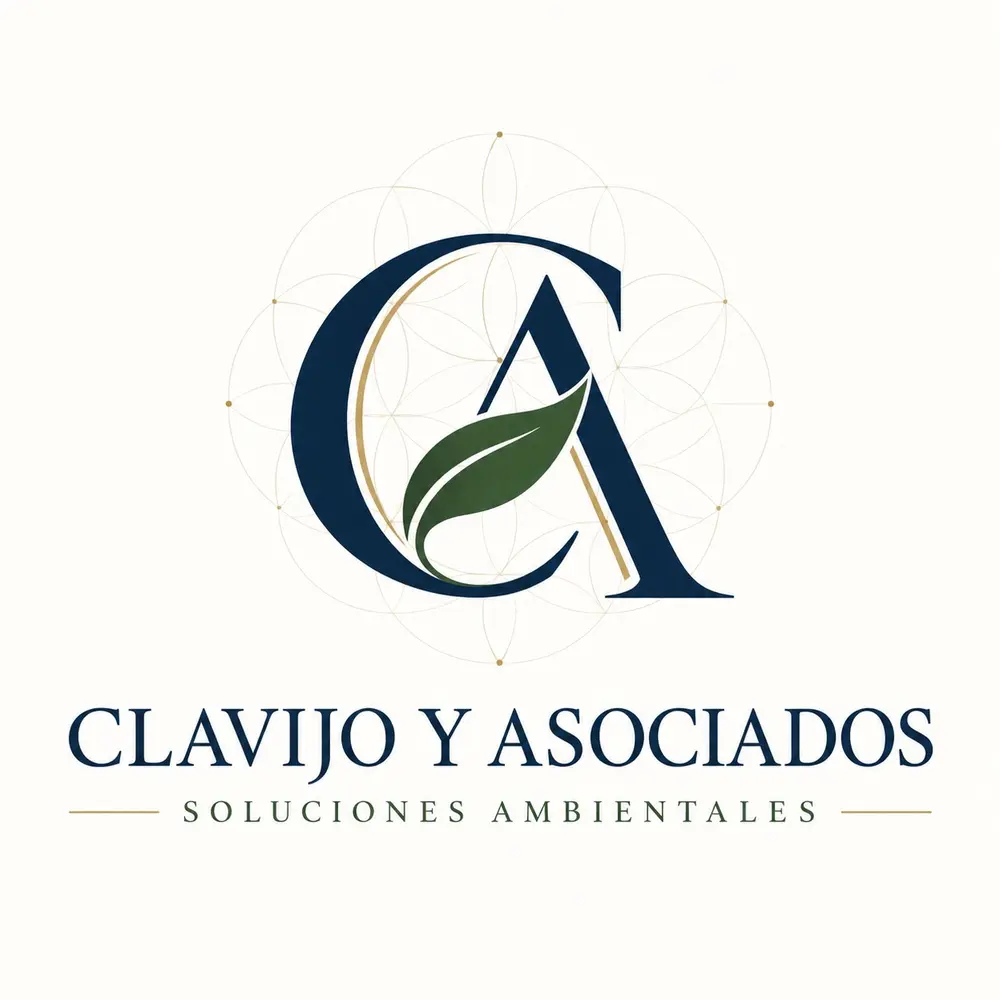
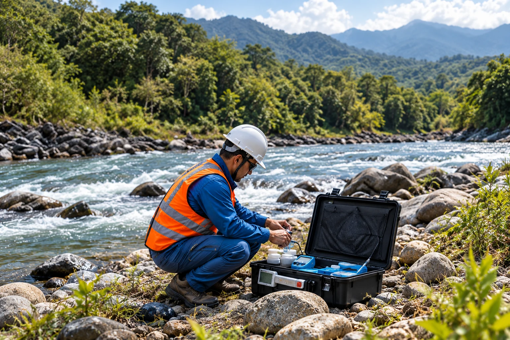

Criterio técnico
Decisiones sustentadas en información, normativa y análisis especializado.

Consultoría ambiental · Ecuador
Firma consultora especializada en gestión ambiental, territorio y cumplimiento para empresas, industrias, infraestructura y proyectos de desarrollo.
Quiénes somos
Clavijo y Asociados es una firma consultora especializada en gestión ambiental y territorial. Integramos capacidades en cumplimiento ambiental, patrimonio natural, monitoreo, información geográfica, gestión de residuos y sostenibilidad para estructurar soluciones técnicamente sólidas y aplicables a la realidad de cada proyecto.
Soluciones
ambientales
para un futuro
viable
Nuestra identidad
Una forma de entender cada proyecto desde el conocimiento técnico, la gestión responsable y el respeto por el entorno.

Nuestro enfoque
Integramos análisis técnico, comprensión territorial y conocimiento normativo para responder a los desafíos ambientales de cada operación y proyecto.
Decisiones sustentadas en información, normativa y análisis especializado.
Comprensión integral del territorio, sus dinámicas, restricciones y oportunidades.
Soluciones aplicables que permiten gestionar obligaciones, riesgos y requerimientos ambientales.
Dirección técnica y seguimiento durante las distintas etapas del proyecto.
Nuestra capacidad
Nuestra práctica integra distintas especialidades ambientales y territoriales dentro de una misma estructura de trabajo, permitiendo abordar proyectos desde el diagnóstico y la planificación hasta el desarrollo técnico y la gestión de resultados.
Conozca nuestros servicios


Una práctica aplicable
Las necesidades ambientales varían según el territorio, la operación y el marco regulatorio. Nuestra metodología permite estructurar respuestas técnicas acordes con las particularidades de cada actividad y proyecto.
Gestión ambiental, cumplimiento y desempeño operativo.
Evaluación, planificación y gestión de impactos.
Gestión responsable del territorio y los recursos.
Conservación, manejo y planificación.
Gestión ambiental, planificación y fortalecimiento institucional.
Nuestro proceso
Aplicamos una metodología clara y flexible, que se adapta a las necesidades de cada proyecto y sector.
Comprendemos el proyecto, su contexto y sus requerimientos.
Definimos actividades, metodología, entregables y planificación.
Ejecutamos los componentes técnicos y gestionamos su seguimiento.
Consolidamos resultados, productos técnicos y documentación final.
Nuestra visión
Entendemos las relaciones entre territorio, actividad productiva y patrimonio natural para construir soluciones que hagan posible un desarrollo técnicamente sustentado y ambientalmente responsable.
Conversemos sobre tu proyectoContáctanos